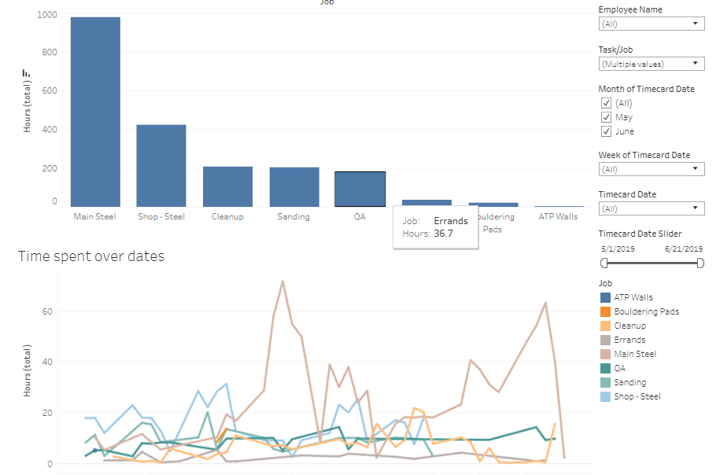
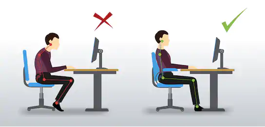

John LaGue
Projects & Publications
Created interactive dashboards to help analyze resources spent building climbing walls. Provided actionable insights to improve efficiency. Also created a sperate interactive climbing map for fun.
Published in Towards Data Science Dec 13th, 2019. Scraped ~1,000 websites collecting over 200,000 public emails. I sent a messgae to them all with a survey about their daily habits and posture. This is the resulting analysis of the survey data.
Published in 2018 IEEE 9th Annual Information Technology, Electronics and Mobile Communication Conference. Won “Most Impactful Graduate Research” award at University of San Francisco in May, 2017. Improved the accuracy of thyroid disease prediction by 35% compared to prior benchmark, a model built by health startup Influence Health. Our model was trained only on imbalanced demographic data.

Optimized the assignment of polling centers (places citizens go to vote) to check in centers (intermediary location ballots are collected before going to the main LA elections headquarters). Using Google Maps api we optimized for travel distance and times to reduce the time it took to collect ballots. Decreased ballot collection times by up to 12% using k-means clustering in the 2018 primary elections.
Saved the university $100,000 each year on roommate conflict based churn using machine learning algorithms in R & Python (Random Forests, SVM, and Logistic Regression) to predict which roommate pairings were likely to have conflicts with 90% accuracy.

Visualized potential factors that increase a movie's gross earnings. Used Tableau, HTML/CSS, JavaScript (d3), MS Excel, and MS Access.

Analyzed play by play data to determine the optimal lineup of players at any given time using CSV data in R